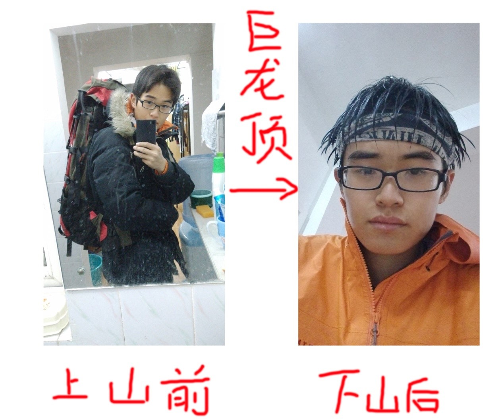
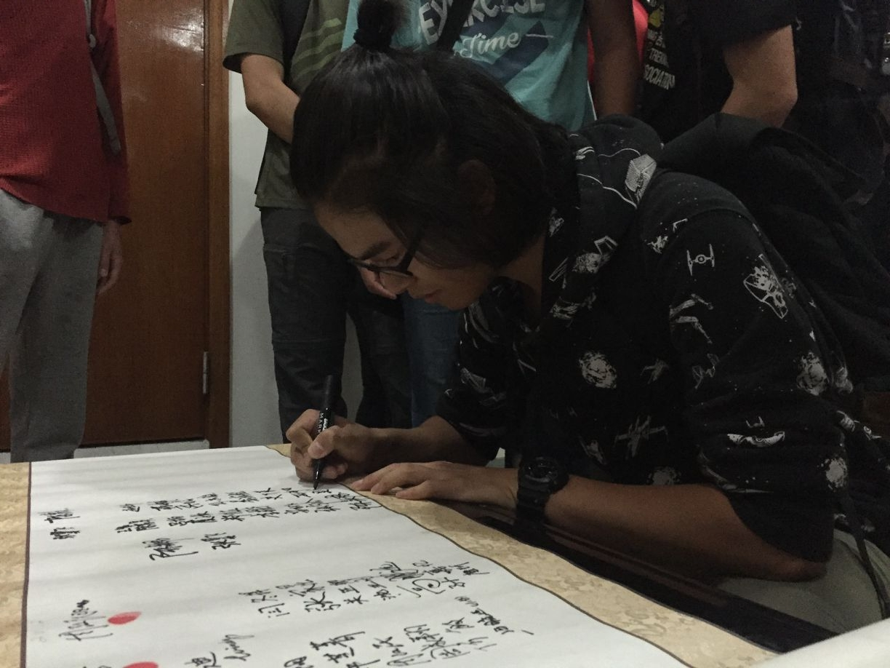
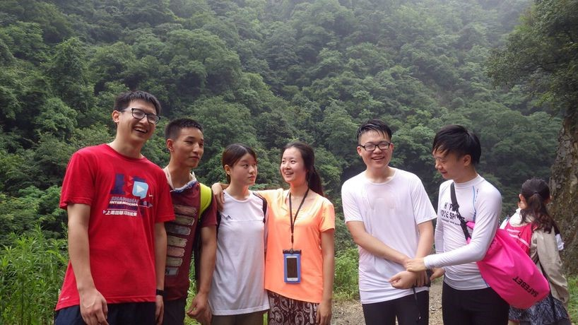
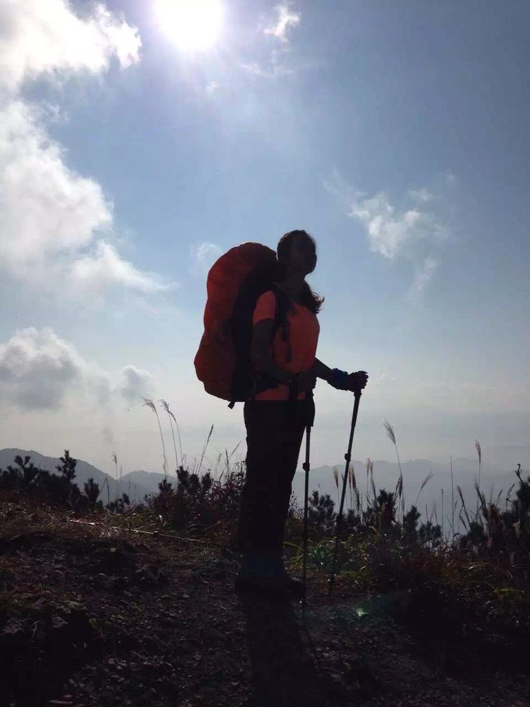
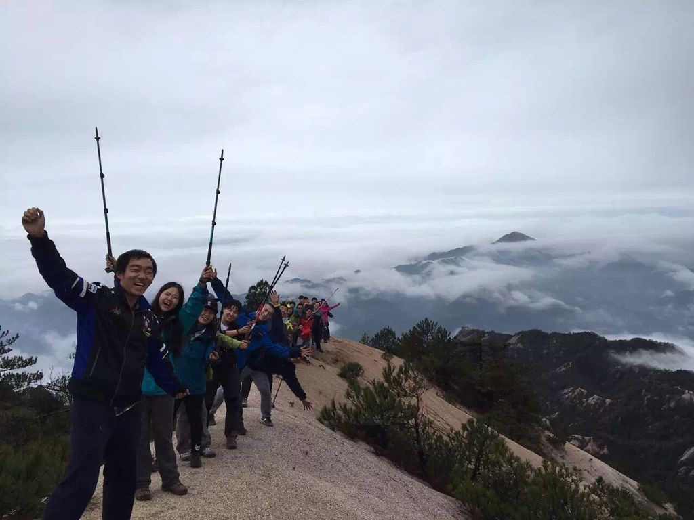
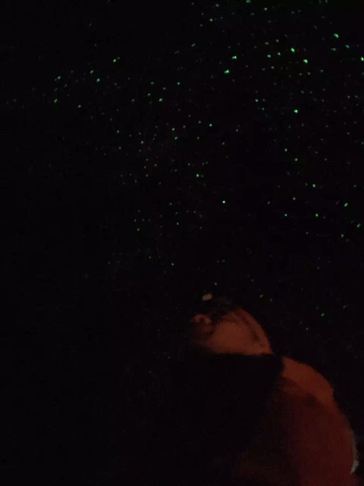
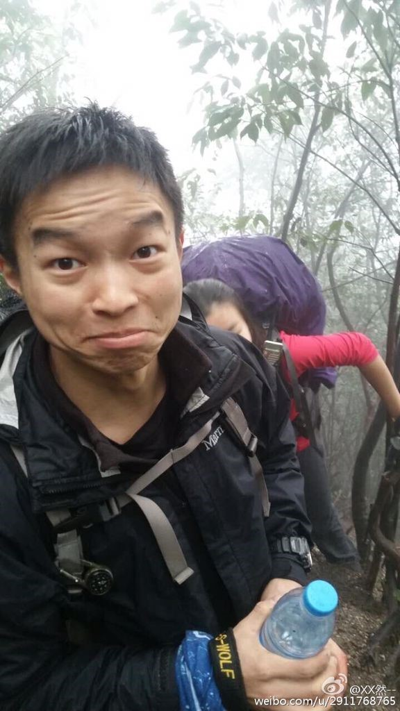
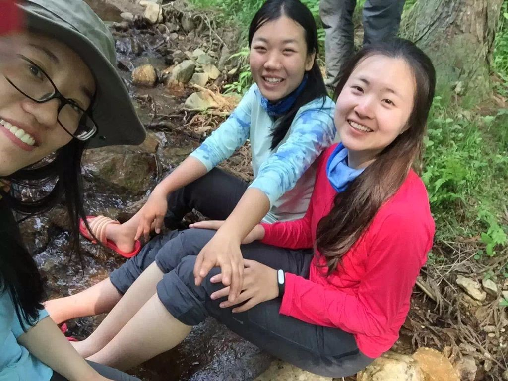
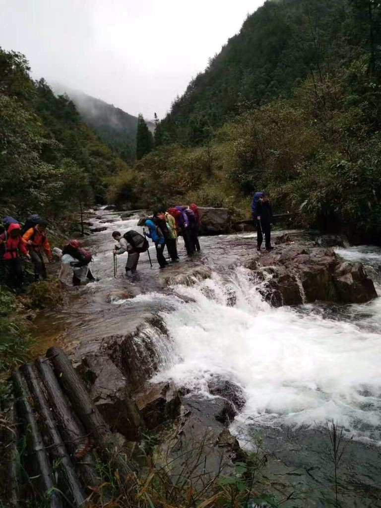

发信人: lvganyu (小雨儿), 信区: outdoor
标 题: 【团爆】医疗队
发信站: 饮水思源 (2016年12月23日19:26:56 星期五)
队长：吴舒旸
我是吴舒旸，大二环境学院，现在是野协医疗队队长。
大一走了四条线加上北京冬训，感觉留下的照片不是很多，还好有副队长担当颜值~
还记得一年前加入野协的初衷是很向往在山野中行走的感觉，这一年中每条线也都走的很
开心（虽然有的时候在山上想着啊啊啊为什么周末要出来不在寝室和室友开黑啊啊啊要走
搓了），也学到了很多东西可以继续传承下去。。是不是画风太严肃了。。
记得第一条线三尖，早上出发上一个小土坡，上到一半太阳突然出来，照的周围一片金光
，抬头看走在前面的人都是逆光的，吸着清凉的空气，感觉徒步简直是世界上最幸福的事
了。
然后第二条巨龙顶就挫了。。
 screen.width - 200){this.width = screen.width - 200}">
北京冬训是第一次集中高强度的训练了，除了学到了冰上技能以外，更重要的是和一起在
零下26度冻过的各位成了很好的朋友。

今年破冰线发现小朋友的热情都很高啊，有的行走技巧比我都好，大家要好好加油！
（附送一张签卖身契的侧颜照）
 screen.width - 200){this.width = screen.width - 200}">
副队长：谢欣然
我是医疗队副队长谢欣然，喜欢的事情很多，但最最喜欢的事情之一绝对有徒步~~特别后
悔第一次参加野协的活动是在大一的小学期，不然我就能多在野协待一年了啊喂。。。我
爱野协！！~
分享几次出线照片：
 screen.width - 200){this.width = screen.width - 200}">
第一次：大一小学期衢州三十六弯溯溪线，摔成狗，而且在水里泡久了冷的话就会抽筋，
各种拖后腿。。。不过真的在第一次出线的时候就感觉有时候我的命就抓在别人手里。。
。谢谢所有在路上帮助过我的童鞋！因为第一次出线太挫所以第二次以后都刻意地只靠自
己走，要变强然后帮助更多人~
 screen.width - 200){this.width = screen.width - 200}">
第二次：新干事线，拉爆张翼飞的就是我没错，哈哈哈哈哈哈哈哈
 screen.width - 200){this.width = screen.width - 200}">
第三条线：龙须山，风景完美，路况也完美，雨天和晴天风景一点也不一样，下一次还会
去的！应该那一次是最后一次和森哥一起出线啦~还尝到了咖喱鸡！！！而且这条线是我第
一次12点就到营地的线哈哈哈，还在小木屋里做游戏~
 screen.width - 200){this.width = screen.width - 200}">
第四条线：巨龙顶。不知道哪个童鞋带的灯，打在营地上面的岩壁上就像星空一样梦幻，
还有篝火，大家围在一起的感觉很棒。
 screen.width - 200){this.width = screen.width - 200}">
以及第五条线大明山，也是干事线，第一次当了副领队，爆一张何敏黑照哈哈哈哈哈
 screen.width - 200){this.width = screen.width - 200}">
七尖第一次遭遇蚂蟥。。。营地旁小溪可以洗脚好评！
 screen.width - 200){this.width = screen.width - 200}">
最后，把登山走成溯溪喂蚂蟥的观音尖。含蚂蟥量和普通线中含水量最多的线非它莫属。
。。也不知道有没有给小鲜肉们留下阴影
一不小心说多了，反正我就是爱野协，哼！行诸山野，立命天地，野协威武！
--
( ・ˍ・) (・ˍ・*)
※ 来源:·饮水思源 bbs.sjtu.edu.cn·[FROM: 59.78.32.54]
|